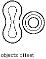

Autodesk AutoCAD 2021: ActiveX Developer's Guide > Create and Edit AutoCAD Entities > About Modifying Objects (VBA/ActiveX) >
Offsetting an object creates a new object at a specified offset distance from the original object.
You can offset arcs, circles, ellipses, lines, lightweight polylines, polylines, splines, and xlines.
To offset an object, use the Offset method provided for that object. The only input to this method is the distance to offset the object. If this distance is negative, it is interpreted by AutoCAD as being an offset to make a “smaller” curve (that is, for an arc it would offset to a radius that is the given distance less than the starting curve's radius). If “smaller” has no meaning, then AutoCAD would offset in the direction of smaller X,Y,Z WCS coordinates. If the offset distance is invalid, then an error is returned.

For many objects, the result of this operation will be a single new curve (which may not be of the same type as the original curve). For example, offsetting an ellipse will result in a spline because the result does fit the equation of an ellipse. In some cases it may be necessary for the offset result to be several curves. Because of this, the method returns the new object, or array of objects, as a variant.
This example creates a lightweight polyline and then offsets the polyline.
Sub Ch4_OffsetPolyline() ' Create the polyline Dim plineObj As AcadLWPolyline Dim points(0 To 11) As Double points(0) = 1: points(1) = 1 points(2) = 1: points(3) = 2 points(4) = 2: points(5) = 2 points(6) = 3: points(7) = 2 points(8) = 4: points(9) = 4 points(10) = 4: points(11) = 1 Set plineObj = ThisDrawing.ModelSpace.AddLightWeightPolyline(points) plineObj.Closed = True ZoomAll ' Offset the polyline Dim offsetObj As Variant offsetObj = plineObj.Offset(0.25) ZoomAll End Sub